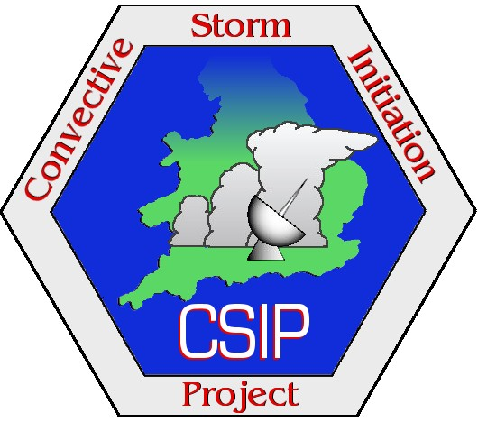

CSIP
- Instructions for Accessing Data
The CSIP project is a successful collaboration involving many data providers and organisations. Data has been collected
from many sources and are stored centrally at the BADC.
These datasets are available to ALL CSIP participants.
Due to the different licence agreements pertaining to the data, participants may need
to register for several BADC datasets to fully access all the relevant data areas.
All users need a BADC username and password (register here) and then to apply for access to:
CSIP Archive and UFAM Instrument Data
By agreeing to the conditions of the UFAM Data Protocol
CSIP participants will have access to the
CSIP archive
and to data collected by the UFAM intruments.
In addition, CSIP users may apply for access to:
Met Office Data
To access meteorological data supporting the CSIP project it is necessary to register for access to the appropriate datasets.
The data registration is now done online and you will be asked to obide by the NERC-Met Office agreement (view text).
Please note that the NERC-Met Office agreement applies only to bona fide academic researchers working on agreed NERC-endorsed
scientific programmes. If any CSIP participants fall outside the academic category please contact the BADC.
Chilbolton Facility Data
To check which datasets you have access to use the MyBADC tab and login with your BADC username and password.
Once you have logged in, you will be able to access the
CSIP archive. A  symbol indicates that you still need to apply for access to that dataset.
symbol indicates that you still need to apply for access to that dataset.
If you have any queries relating to any CSIP datasets please contact BADC support.
Go to CSIP archive


Return to main CSIP page.